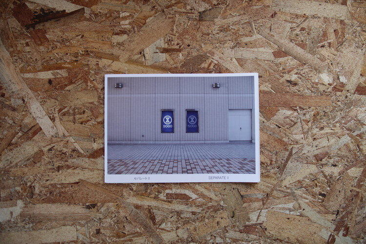
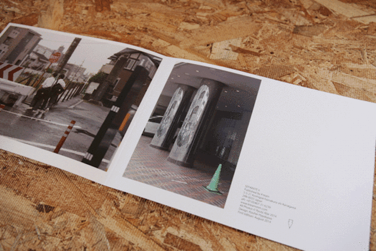
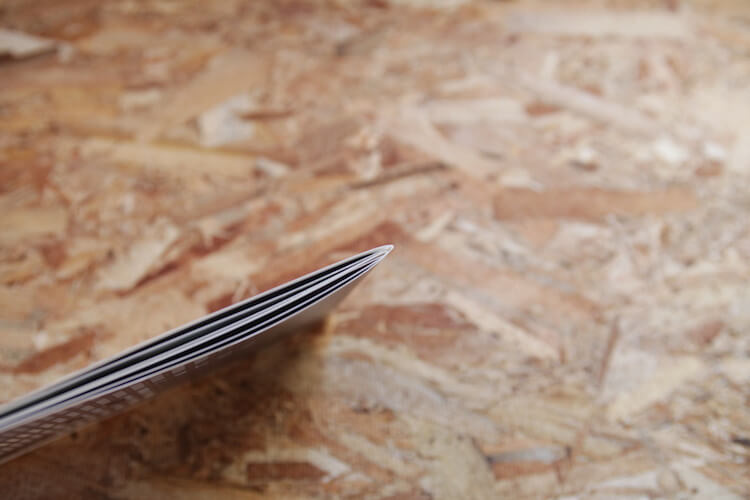
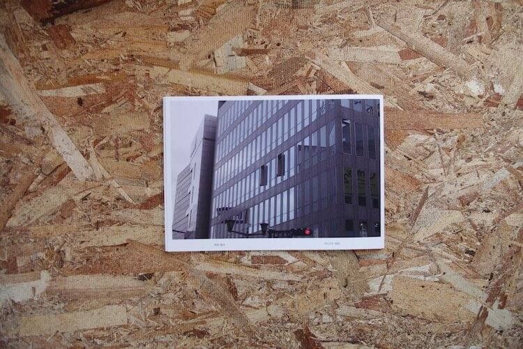
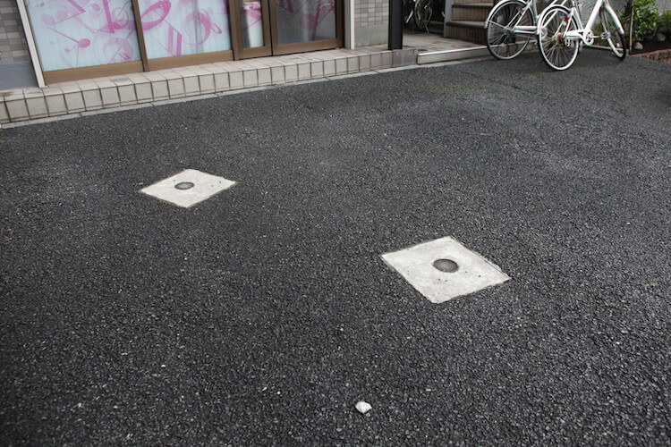
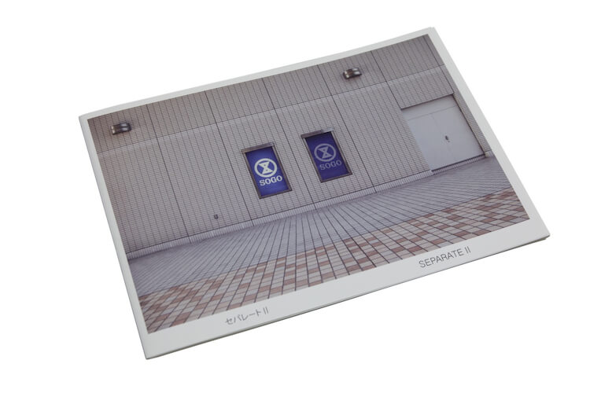

- 
- 
- 
- 
- 
- 
-
These are not about double or twin but about a phenomenon of separate.
「ダブル」や「ツイン」ではなく、「セパレート」という現象についての写真集。
―
Pages: [16]p
Dimensions: 18.5 x 25.7 cm
Cover: Paperback
Binding: folded
Process: offset printpublished by Kteam
―